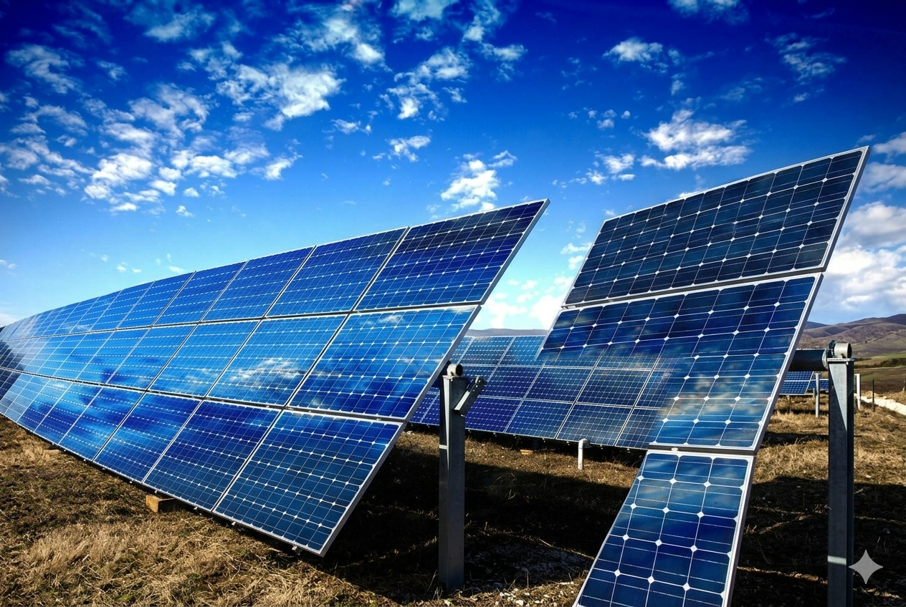
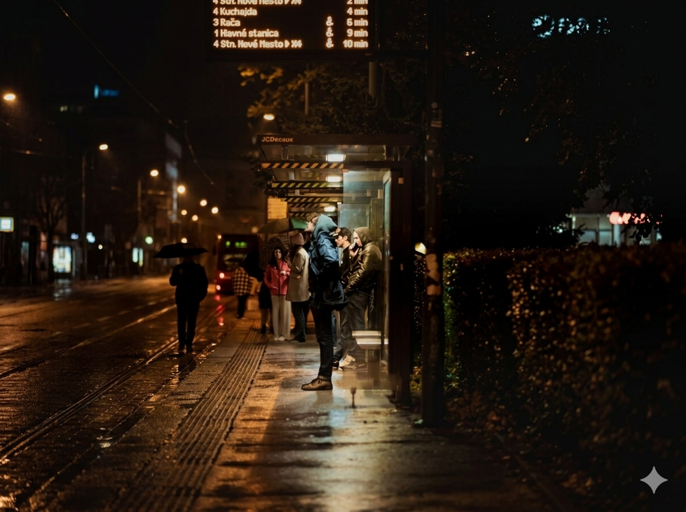
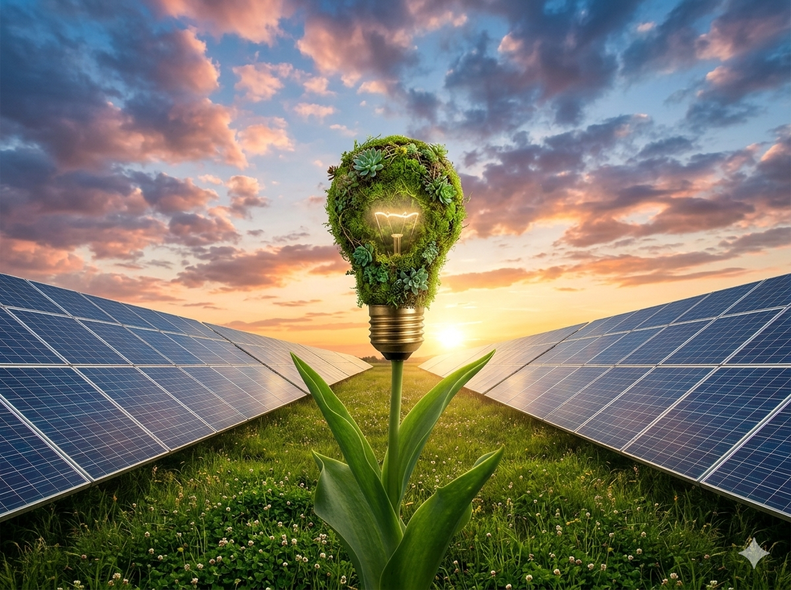
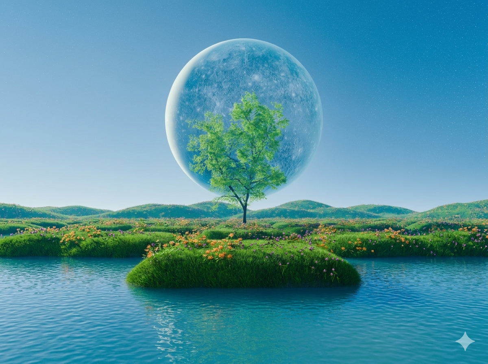

Energia Solar
O projeto simula a utilização de painéis solares em paradas urbanas para geração de energia limpa e sustentável.
Smart City • Energia Renovável • Mobilidade Urbana
O NEKOBUS é uma plataforma web desenvolvida para simular a implementação de paradas de ônibus inteligentes alimentadas por energia solar, utilizando dados de mobilidade urbana para otimizar eficiência energética, sustentabilidade e infraestrutura urbana.
Sobre o Projeto
O NekoBus foi desenvolvido para demonstrar como energia renovável e análise de dados urbanos podem transformar a infraestrutura das cidades, promovendo soluções inteligentes, sustentáveis e eficientes para o transporte público.

O projeto simula a utilização de painéis solares em paradas urbanas para geração de energia limpa e sustentável.

Dados inspirados em plataformas de mobilidade são utilizados para identificar regiões estratégicas de implantação.
O sistema apresenta gráficos e indicadores relacionados ao impacto energético, econômico e ambiental.
A proposta integra tecnologia, sustentabilidade e mobilidade urbana para cidades mais modernas e eficientes.
Origem da Ideia
O NekoBus nasceu da necessidade de unir energias renováveis com análise de dados urbanos para melhorar a infraestrutura das cidades.
A crescente demanda energética das áreas urbanas e a falta de estruturas sustentáveis em pontos de transporte público motivaram a criação de uma solução inteligente voltada para mobilidade urbana e eficiência energética.
A ideia ganhou força através do conceito de Smart Cities, utilizando informações inspiradas em plataformas de mobilidade urbana para identificar os locais com maior fluxo de passageiros e maior potencial de geração solar.

Tecnologias Utilizadas
O projeto foi desenvolvido utilizando tecnologias modernas de desenvolvimento web para criar uma plataforma visualmente interativa, responsiva e acessível.
A interface foi construída com HTML, CSS e JavaScript, permitindo uma navegação dinâmica e intuitiva.
Bibliotecas como Chart.js e Leaflet foram utilizadas para criação de dashboards inteligentes e mapeamento geográfico de pontos estratégicos da cidade.
O algoritmo de simulação realiza cálculos baseados em fluxo de passageiros e potencial de geração energética, permitindo análises ambientais e econômicas.
Simulador Interativo
Explore o mapa de Sorocaba, veja os gráficos de impacto e confira o ranking dos melhores pontos para instalação de energia solar.
| # | Ponto | Pessoas/dia | Energia (kWh) | CO₂ evitado | Viabilidade | Score |
|---|
Funcionamento
O sistema utiliza informações de mobilidade urbana para identificar os pontos com maior fluxo de passageiros.
O algoritmo calcula o potencial de geração solar e eficiência energética em cada localidade analisada.
Os resultados são apresentados através de gráficos e indicadores ambientais, econômicos e energéticos.
Investimento e Viabilidade
O custo estimado para implantação física de cada unidade do projeto é de aproximadamente R$ 7.000,00, incluindo painéis solares, estrutura da parada, sistemas elétricos, iluminação e hardware de comunicação.
Apesar do investimento inicial, o projeto apresenta potencial de retorno a médio e longo prazo através da redução dos custos energéticos municipais e da valorização da infraestrutura urbana sustentável.
O NekoBus também possui potencial para futuras expansões envolvendo Internet das Coisas (IoT), monitoramento em tempo real e integração com sistemas inteligentes de mobilidade urbana.
Retorno Esperado
O projeto busca gerar benefícios ambientais, econômicos e sociais através da integração entre energia renovável e mobilidade urbana inteligente.
A microgeração solar pode reduzir significativamente os custos de energia elétrica utilizados em estruturas urbanas públicas.

A utilização de energia renovável contribui diretamente para diminuição da emissão de gases poluentes.
A iluminação inteligente e a disponibilidade de carregamento de dispositivos melhoram a experiência dos passageiros.
O projeto fortalece o conceito de Smart Cities através da integração entre tecnologia, sustentabilidade e análise de dados.
Contato
contato@nekobus.com
github.com/seuprojeto